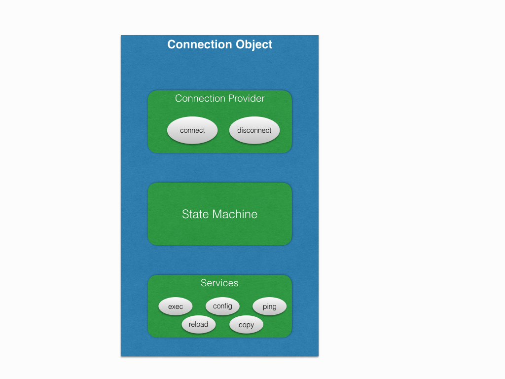
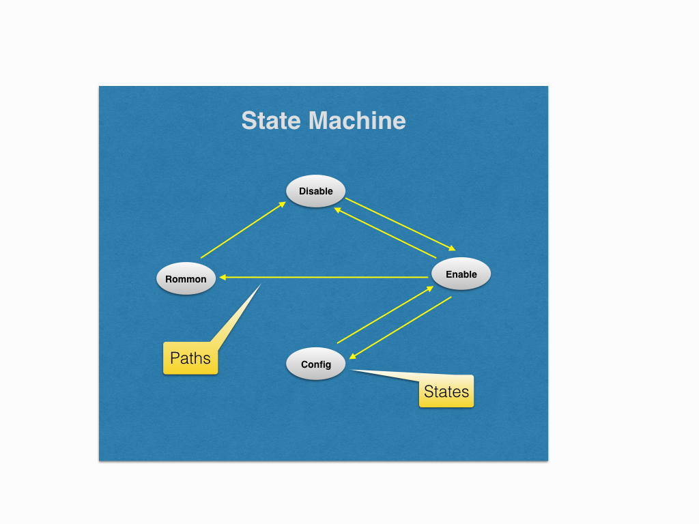

State Machine¶
Statemachine is a major building block of a connection object. It enables the connection handle to smoothly traverse across different router states. This is how it fits into overall scheme of things.
We define router states as different router modes, e.g. enable, disable, config, rommon etc. Hence statemachine provides a software abstraction of all the router modes, and it keeps the connection library always in sync with the actual device mode.
We need to implement the statemachine for all the platform implementations and if this step is done correctly, we can safely assume that at least half of the platform implementation is over.
In this chapter we will go through the important APIs and using an example device we will try to implement a working statemachine.
Before you go further, please make sure you have gone through Expect Abstraction Library
Note
It is not mandatory that states must be a router mode. In dual rp connections, we even treat standby locked also as one of the states. It all depends on how do we want to abstract to the device in software.
Structure¶
The statemachine consists of following two things:
States: Individual states representing one of the router modes.
Paths: Migration paths between the states.
Following is the block diagram for the same.
State¶
As said in the previous section, it depicts one of the router modes. We identify a router mode using the prompt pattern. For example this is how we can define the enable state and disable state.
1from unicon.statemachine import State
2# enable state
3enable = State('enable', r'^.*(%N-standby|%N-sdby|%N)*#\s?#')
4# disable state
5disable = State('disable', r'^.*(%N-standby|%N-sdby|%N)*#\s?>')
6# config state
7config = State('config', r'^.(%N\(config\))#\s?')
What is %N ? Since the hostname of the device is not known at the point of
creating states, hence it is a just a markup indicating hostname. All the %N
would be replaced by the actual hostname of the device during runtime.
API Guide For State¶
- class unicon.statemachine.statemachine.State(name, pattern)
Defines a device state
Example
enable_state = State(name='enable', pattern=r'^.*Router|%N#')
Initializes the state
- __init__(name, pattern)
Initializes the state
- add_state_pattern(pattern_list)
Appends state patterns to the existing list
Example
state.add_state_pattern('.*new pattern')
- restore_state_pattern()
Restore state pattern back to default one.
Example
state.restore_state_pattern()
Path¶
Path objects contain all the information for migrating from one state to another. It requires the following arguments.
from_state: state object from which migration will start. (mandatory)
to_state: state object to which migration will end. (mandatory)
command: command required to initiate the migration. (mandatory)
dialog: dialog object for negotiating any interaction because of command (optional)
Continuing from the previous example, lets add a few Path.
1from unicon.statemachine import State
2disable_to_enable = Path(disable, enable, "enable", None)
3enable_to_disable = Path(enable, disable, "disable", Dialog())
4enable_to_config = Path(enable, config, "config term", Dialog())
5config_to_enable = Path(config, enable, "end", None)
Please note that Dialog in above example will be different in all the lines,
based on the nature of interaction caused by the command, a blank Dialog
has been used just for example.
The command option can also be a callable function. This can be used in case
a single command sent with sendline() is not sufficient. Below example
sends an escape character and quits a telnet session as part of a state transition.
The arguments, statemachine, spawn and context are mandatory.
1 def escape_telnet(statemachine, spawn, context):
2 spawn.send('~')
3 spawn.expect(r'telnet>\s?$', timeout=5)
4 spawn.sendline('q')
5
6 module_console_to_chassis = Path(module_console, chassis, escape_telnet, None)
Statemachine¶
To create a statemachine class, we need to subclass from StateMachine,
which is the base class. This base class has all the relevant instrumentation
required for creating shortest paths between any two given states. It uses all
the Path instances to make way from any given state to any state. It
provides APIs required for state migration, which we shall see shortly.
Let’s create a sample statemachine class. All the State and the Path
instances, which we created above are eventually fed into the custom
statemachine class.
1 from unicon.statemachine import StateMachine
2 from unicon.statemachine import State
3 from unicon.statemachine import Path
4 class MyStateMachine(StateMachine):
5 def create(self):
6 # enable state
7 enable = State('enable', r'^.*(%N-standby|%N-sdby|%N)*#\s?#')
8 # disable state
9 disable = State('disable', r'^.*(%N-standby|%N-sdby|%N)*#\s?>')
10 # config state
11 config = State('config', r'^.(%N\(config\))#\s?')
12 # create all the paths
13 disable_to_enable = Path(disable, enable, "enable", None)
14 enable_to_disable = Path(enable, disable, "disable", Dialog())
15 enable_to_config = Path(enable, config, "config term", Dialog())
16 config_to_enable = Path(config, enable, "end", None)
17 # add all the states to statemachine
18 self.add_state(enable)
19 self.add_state(disable)
20 self.add_state(config)
21 self.add_state(enable)
22 # add all the paths to statemachine
23 self.add_path(disable_to_enable)
24 self.add_path(enable_to_disable)
25 self.add_path(enable_to_config)
26 self.add_path(config_to_enable)
27 # at the time of creating statemachine instance you should be aware of the
28 # hostname of the device.
29 sm = MyStateMachine("<hostname>")
Note
Please note that we don’t want same State and Path instances to be
reused by different statemachine classes. Hence we create State and
Path instances inside the scope of statemachine class.
Using The StateMachine¶
Now that the statemachine instance is created, let’s take it for a spin.
However, before we do so please ensure that you have already connected to the
device (statemachine doesn’t know how to connect) and you have a spawn
instance. It can be used against any spawn instance which is already
connected to the device.
Here is a sample run from the statemachine of a connection instance,
connected to a single rp IOS device.
1 In [4]: sm = con.sm # con is the connection handle
2 In [5]: s = con.spawn
3 In [6]: # getting the current state
4 In [7]: sm.current_state
5 Out[7]: 'enable'
6 In [8]: # to list all the states in statemachine
7 In [9]: sm.states
8 Out[9]: [enable, disable, config, rommon]
9 In [10]: # to list all the paths, __str__ of paths have to tweaked for better legibility
10 In [11]: sm.paths
11 Out[11]:
12 [enable->disable,
13 enable->config,
14 enable->rommon,
15 disable->enable,
16 config->enable,
17 rommon->disable]
18 In [13]: # to get a state object by name.
19 In [14]: state = sm.get_state('enable')
20 In [15]: type(state)
21 Out[15]: unicon.statemachine.statemachine.State
22 In [16]: state
23 Out[16]: enable
24 In [17]: # to get a path by name
25 In [18]: path = sm.get_path('enable', 'disable')
26 In [19]: type(path)
27 Out[19]: unicon.statemachine.statemachine.Path
28 In [20]: path
29 Out[20]: enable->disable
30 In [28]: # to move to any given state
31 In [29]: sm.go_to('config', s)
32 config term
33 Enter configuration commands, one per line. End with CNTL/Z.
34 si-tvt-7200-28-41(config)#
35 In [30]: sm.go_to('enable', s)
36 end
37 si-tvt-7200-28-41#
38 In [31]:
39 In [31]: # go to any valid state in the state machine.
40 In [32]: sm.go_to('any', s)
41 ''
42 si-tvt-7200-28-41#
43 si-tvt-7200-28-41#
44 In [33]: sm.current_state
45 Out[33]: 'enable'
learn_hostname feature support requirements¶
Hostname pattern substitution using the %N markup is typically required
for routing and switching platforms that expect the hostname passed into the
unicon Connection object (or the pyATS device name being connected to)
to be already configured on the device in order for the state patterns
containing %N to match.
This feature enables connection to a device with an unknown hostname
configured. It does so by analyzing the device prompt, learning a potentially
different hostname and then using that hostname for all subsequent
%N markup substitutions.
All state patterns containing a chain of %N hostname variants must
specify them in a most-to-least-specific manner in order for this feature
to work correctly. A hostname cannot be learned if none of the device’s
state patterns contain the %N hostname markup.
Here’s a simplified example from the generic plugin patterns illustrating this.
Note the final pattern in the chain is simply %N
self.enable_prompt = r'^(.*?)(%N-standby|%N-stby|%N)(\(boot\))*#\s?$'
The connection provider object’s establish_connection method is responsible
for driving this feature.
If for some reason, learn_hostname is unable to detect hostname then unicon
compares unicon buffer with default hostname pattern set to Settings
Attribute DEFAULT_HOSTNAME_PATTERN. Default value is
r'RouterRP|Router|[Ss]witch|Controller|ios'
API Guide For StateMachine¶
- class unicon.statemachine.StateMachine(hostname=None, learn_hostname=False)
StateMachine for connection
StateMachine class has the detail of all supported device state for any particular platform and the connection between each of this state, and also provide mechanism to change the device state
This class performs the following
Collects and Validates supported device state
Collects path between any two defined state
Computes the transition path from one state to any end state
Keeps in track of the current device state
constructs the Dialog for changing device state on runtime
Enables hostname substitution
Provides methods to change a device state
Each state created outside statemachine has to be add to it
Initializes the state machine
- __init__(hostname=None, learn_hostname=False)
Initializes the state machine
- add_default_statements(statements)
Adds default Statements
This statement will be appended to all state transitions
Example
stmt1 = Statement(pattern=r'.*[confirm]', action=lambda spawn:spawn.sendline() loop_continue=True) stmt2 = Statement(pattern=r'.*[yes/no]', action=lambda spawn:spawn.sendline('yes') loop_continue=True) # Adding default statements sm.add_default_statements(stm1) sm.add_default_statements(stm2) # Adding a list of statements sm.add_default_statements([stm1, stmt2])
- add_path(path, index=None)
Add path to the list of available paths
Example
# Create a path instance first path1 = Path('enable', 'config', command='config terminal', dialog=None) # Now add it to SM sm.add_path(path1)
- add_state(state, index=None)
Appends a given state to the state machine
Example
state = State(state_name='name', pattern=None') sm.add_state(state)
- create()
Create the statemachine
- create_path(from_state, to_state, command=None, dialog=None)
Creates a Path and add it to the state machine
Example
sm.create_path('enable', 'config', command='config terminal', dialog=None)
- create_state(name, pattern)
Creates a state and add it to State Machines
Example
sm.create_state(state_name='name', pattern=None')
- property current_state
Current device state property getter
- find_all_paths(from_state, to_state)
Return all possible paths from any given state to any state
Example
sm.find_all_paths('enable', 'disable')
- get_path(from_state, to_state)
Get the path object for the given from and to state
This API is used for getting paths between directly linked states
- Usage:
sm.get_path(<from_state>, <to_state>)
- Example::
sm.get_path('enable', 'disable')
- get_shortest_path(from_state, to_state)
Finds the shortest path from the list of possible paths
Example
sm.get_shortest_path('rommon', 'enable')
- get_state(state_name)
Returns the state object for the given the name
Example
sm.get_state('config')
- go_to(to_state, spawn, context={}, dialog=None, timeout=None, hop_wise=False, prompt_recovery=False)
Performs device state change
- Parameters:
to_state – Destination state, or a list of state or a keyword ‘any’
spawn – Device handle where the state change has to be performed
dialog – Additional dialogs which has to be appended to the SM path
prompt_recovery – Enable/Disable prompt_recovery feature
timeout – timeout for this goto operation
hop_wise – If enabled each path is processed separately Default: False
Example
# Changing to a particular state from the current state # Here sm is the state machine instance sm.go_to(to_state='enable', spawn=dev.spawn, context=dev.context) # Changing state to anyone state from the given list of states sm.go_to(to_state=['enable', 'disable'], spawn=dev.spawn, context=dev.context) # Bring device to 'any' valid available state in state machine # ( Usually used for reading the device state) sm.go_to(to_state='any', spawn=dev.spawn, context=dev.context)
- remove_path(from_state, to_state)
Removes a particular path from SM
- Usage:
sm.remove_path(<from_state>, <to_state>)
Example
sm.remove_path('enable', 'disable')
- remove_state(state)
Removes a state from SM, given the string name
Example
sm.remove_state('disable')